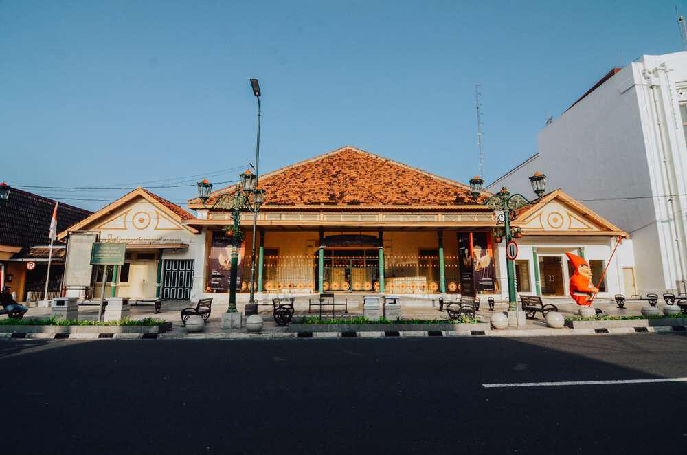

Keraton
Deskripsi
Keraton Kesultanan Ngayogyakarta Hadiningrat atau yang lebih dikenal dengan nama Keraton Yogyakarta merupakan pusat dari museum hidup kebudayaan Jawa yang ada di Daerah Istimewa Yogyakarta. Tidak hanya menjadi tempat tinggal raja dan keluarganya semata, tempat ini juga menjadi kiblat perkembangan budaya Jawa. Di tempat ini, wisatawan dapat belajar dan melihat secara langsung bagaimana budaya Jawa dilestarikan. Keraton Yogyakarta dibangun oleh Pangeran Mangkubumi pada tahun 1755, beberapa bulan setelah penandatanganan Perjanjian Giyanti. Mengunjungi Keraton Yogyakarta akan memberikan pengalaman yang berharga sekaligus mengesankan. Terdapat banyak hal yang bisa disaksikan di Keraton Yogyakarta, mulai dari aktivitas “Abdi Dalem” yang sedang melakukan tugasnya, hingga melihat barang-barang koleksi yang ada di Keraton Yogyakarta. Koleksi yang disimpan dalam kotak kaca yang tersebar di berbagai ruangan, mulai dari keramik dan barang pecah belah, senjata, foto, miniatur serta replika, hingga aneka jenis batik serta diorama proses pembuatannya. Selain itu, wisatawan juga bisa menikmati pertunjukan seni dengan jadwal berbeda-beda setiap harinya. Pertunjukan tersebut di antaranya adalah macapat, wayang golek, wayang kulit dan tari-tarian.
Harga Tiket Masuk: Rp.15.000/person
Taman Sari
Deskripsi
Taman Sari Yogyakarta merupakan salah satu bangunan milik kerajaan Yogyakarta yang kini beralih fungsi sebagai destinasi wisata dan juga masih digunakan sebagai tempat ritual oleh keluarga raja. Memiliki bentuk bangunan arsitektur ala Portugis-Jawa, merupakan daya tarik utama dari Istana Taman Sari. Menjadi salah satu situs bersejarah di Nusantara, kala itu dibangun pada masa pemerintahan Raja Sultan Hamengkubuwono I, tepatnya pada tahun 1758-1765. Orang-orang kerap kali menyebutnya sebagai “The Fragrant Garden“. Luas lahan mencapai lebih dari 10 hektar dengan jumlah 57 bangunan yakni bangunan utama, danau buatan, pulau buatan, kolam pemandian, lorong bawah air, jembatan gantung, kanal air, dan masih banyak bangunan mewah lainnya. Meskipun sekarang kondisi bangunan tidak lagi utuh seperti dulu kala, namun tetap saja mengundang perhatian bagi pengunjung domestik maupun pengunjung mancanegara. Kini Taman Sari telah menjadi monumen bagi Daerah Istimewa Yogyakarta. Konsep gaya arsitektur bangunan berbeda dengan bangunan utama, dari sisi artistik maupun fungsinya. Lantaran objek wisata Yogyakarta ini lebih condong tematik dengan lebih mengutamakan bagian pemandian yang memiliki julukan “Istana Air Jogja”.
Harga Tiket Masuk: Rp.15.000/person
Museum Sonobudoyo
Deskripsi
Museum Sonobudoyo yang berlokasi di pusat kota berada dalam lokasi yang strategis, berada dalam lingkungan Pusat Budaya Yogyakarta yang banyak mendapatkan perhatian dari berbagai pihak baik dari dalam maupun luar negeri. Bangunan Museum Sonobudoyo merupakan rumah joglo dengan arsitektur masjid keraton kesepuhan Cirebon. Didesain oleh Ir. Th. Karsten. Keberadaan museum erat hubungannya dengan sebuah yayasan masa Kolonial Java Institut dibidang kebudayaan Jawa, Madura, Bali, dan Lombok sebagai pencetus berdirinya Museum Sonobudoyo, yang diresmikan pada tanggal 6 November 1935, oleh Sri Sultan Hamengku Buwono VIII dengan ditandai Candrasengkala “Kayu Winayang Ing Brahmana Budha”.
Harga Tiket Masuk: Rp.10.000/person
Goa Jomblang
Deskripsi
Goa Jomblang merupakan sebuah goa vertikal yang bertipe collapse doline. Goa ini terbentuk akibat proses geologi amblasnya tanah beserta vegetasi yang ada di atasnya, jatuh ke dasar bumi. Runtuhan ini membentuk sinkhole atau sumur, yang di dalam bahasa Jawa dikenal dengan istilah luweng. Goa Jomblang memiliki kedalaman sekitar 60 meter dan bergaris tengah sekitar 50 meter. Fenomena ini sangatlah luarbiasa, ketika goa vertikal berpadu dengan pepohonan yang rimbun di dalamnya. Pemandangan yang disuguhkan dari dasar goa tidak akan kamu temukan di tempat lain. Kamu akan terjun ke bawah goa dan melihat pemandangan langit dari bawah.
Harga Tiket Masuk: Rp.500.000/person
Museum Benteng Vrederburg
Deskripsi
Benteng Vredeburg merupakan salah satu museum peninggalan Belanda yang sangat terkenal di Yogyakarta karena di museum ini memiliki nilai cerita yang cukup panjang dan masih bertahan hingga saat ini. Museum Benteng Vredeburg mengoleksi berbagai macam karya seni, berbagai macam patung, dan berbagai macam senjata peninggalan Belanda. Pada tahun 1767, mulailah pembangunan benteng di bawah pengawasan seorang ahli ilmu bangunan dari Belanda yang bernama Ir. Frans Haak dan pembangunan selesai pada tahun 1787. Setelah selesainya pembangunan benteng yang diberi nama “Rustenburg” yang artinya benteng peristirahatan. Pada tahun ke 1967 di Yogyakarta, terjadi bencana alam gempa bumi yang sangat dahsyat sehingga menjadikan sebagian benteng tersebut menjadi rusak parah. Akhirnya benteng tersebut diperbaiki dan diubah namanya menjadi “Vredeburg” yang artinya benteng perdamaian, agar hubungan antara Belanda dan pihak keraton tidak saling menyerang. Ketika tiba di lokasi museum, kamu akan langsung disambut dengan dua buah patung yang letaknya tak jauh dari pintu gerbang. Kedua patung tersebut merupakan patung replika dari Jendral Soedirman dan Oerip Soemohardjo. Di belakang kedua patung pahlawan Indonesia ini, terdapat meriam kuno yang kini sudah tak digunakan lagi. Memasuki ke dalam ruangan bangunan, terdapat museum yang dilengkapi dengan diorama-diorama yang dapat dikategorikan menjadi 4 bagian. Diorama-diorama tersebut dikemas secara menarik dan dipajang pada etalase kaca di dinding bangunan museum.
Harga Tiket Masuk: Rp.10.000/person
Obelix Sea View

Deskripsi
Obelix Sea View adalah destinasi wisata yang terletak di kawasan pantai selatan Yogyakarta, menawarkan pemandangan laut yang indah dari ketinggian. Tempat ini dirancang dengan konsep modern dan estetik, menghadirkan spot-spot foto menarik, restoran, dan area bersantai yang cocok untuk menikmati matahari terbenam. Berlokasi di daerah Bukit Pengilon, tempat ini menjadi favorit wisatawan untuk menikmati suasana tenang sambil melihat panorama Samudera Hindia. Obelix Sea View juga sering dikunjungi sebagai alternatif rekreasi keluarga atau tempat nongkrong bersama teman.
Harga Tiket Masuk: Rp.30.000/person
Obelix Hills

Deskripsi
Obelix Hills adalah destinasi wisata populer di Prambanan, Sleman, Yogyakarta, yang menawarkan pemandangan alam dari ketinggian dengan latar belakang perbukitan dan matahari terbenam. Tempat ini dikenal dengan suasana yang estetik, berbagai spot foto menarik, area bersantai, serta fasilitas seperti restoran dan kafe outdoor. Selain menikmati panorama alam, pengunjung juga dapat menikmati suasana romantis di malam hari dengan pencahayaan yang indah. Cocok untuk rekreasi keluarga, pasangan, atau nongkrong bersama teman, Obelix Hills menjadi pilihan favorit wisatawan yang mencari pengalaman wisata alam yang modern.
Harga Tiket Masuk: Rp.20.000/person
Tebing Breksi

Deskripsi
Tebing Breksi awalnya merupakan komplek pertambangan batu putih yang dikelola oleh warga sekitar, dengan kata lain Tebing Breksi ini tidak terbentuk secara alami akan tetapi terbentuk akibat aktivitas menambang yang dilakukan oleh warga sekitar. Awal mula Tebing Breksi menjadi destinasi wisata adalah ketika para peneliti geologis melakukan penelitian terhadap batuan yang berada di lokasi tersebut, setelah penelitian selesai ditemukan data bahwa batuan yang ada di lokasi tersebut merupakan endapan dari abu vulkanik Gunung Api Purba Nglanggeran, maka dari itu kawasan Tebing Breksi termasuk ke dalam cagar budaya alam yang harus dilindungi sehingga aktivitas pertambangan dihentikan. Sejak saat itu, aktivitas masyarakat di sekitar Tebing Breksi lesu, masyarakat yang awalnya bekerja sebagai penambang harus mencari pekerjaan lain. Seiring berjalannya waktu, beberapa orang wisatawan mengunjungi bekas tambang tersebut karena memang pemandangan yang bagus dengan tebing batuan kapur tinggi menjulang yang merupakan suatu hal baru yang belum pernah ada sebelumnya di Yogyakarta. Pada saat itu, belum terbentuk kepengurusan untuk mengakomodir wisatawan yang berkunjung, hingga akhirnya Tebing Breksi semakin ramai dikunjungi wisatawan dan terbentuklah suatu pengurus di kawasan tersebut.
Harga Tiket Masuk: Rp.20.000/person
Bukit Bintang

Deskripsi
Bukit Bintang ini menawarkan panorama alam yang sungguh luar biasa. Sesuai dengan namanya, ketika kamu sedang berada di kawasan ini seolah-olah kamu berada di angkasa di mana bisa melihat gemerlapnya bintang-bintang yang sebenarnya adalah lampu-lampu kota yang bila dilihat dari atas akan terlihat seperti bintang-bintang yang bertebaran di angkasa. Lokasi wisata ini sungguh tiada duanya di Kota Yogyakarta, karena Bukit Bintang mempunyai lokasi yang sangat strategis di mana berada di tepi pegunungan seribu yang menghadap langsung Kota Yogyakarta yang ada di sebelah baratnya. Selain itu juga kawasan ini apabila diakses dari kota, relatif tidak jauh dan tidak membuat kamu lelah di perjalanan. Bukit yang memiliki nama asli sebagai Bukit Hargo Dumilah ini telah bertransformasi menjadi tempat wisata favorit di kalangan masyarakat selama beberapa tahun belakangan. Lambat laun banyak masyarakat yang menepi untuk melihat pemandangan Yogyakarta yang luar biasa di kala sore menjelang malam hari, membuat Bukit Bintang Yogyakarta ini sekarang telah berkembang menjadi kawasan wisata yang cukup besar dengan banyaknya warung-warung makan yang menyediakan spot untuk berkumpul dan bersantap ria sambil menikmati pemandangan Kota Yogyakarta dari atas ketinggian.
Harga Tiket Masuk: FREE